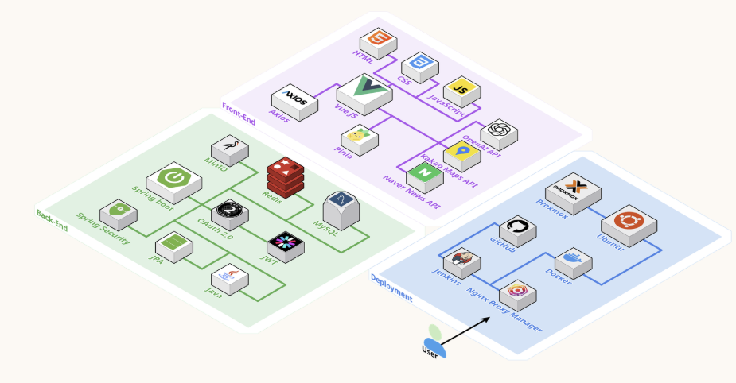

인덱스 튜닝과 핵심 테이블 중심 반정규화를 통해 270만 건 조회 시 12초 → 1초 미만(약 92% 단축)으로 개선했습니다.
Kakao Map API와 법정동 계층 구조를 활용해 100만+ 아파트 실거래 데이터를 지도 마커로 표출하고 직관적인 시세 조회 기능을 구현했습니다.
OpenAI 기반 부동산 전문 Q&A 챗봇 및 부동산 뉴스 크롤링으로 실시간 뉴스를 제공했습니다.
Redis 캐싱 전략으로 반복 조회 성능을 높이고, MinIO 객체 스토리지로 이미지 데이터를 효율적으로 관리했습니다.